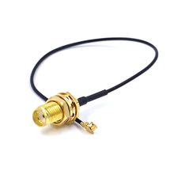

Кабель-переходник IPX – SMA Female (pigtail)
Это коаксиальный кабель-переходник типа IPX (I-PEX/u.FL/MHF1) → SMA Female, обычно используемый для подключения внешней SMA-антенны к платам и модулям с микро-RF разъёмом.

Документация
Характеристики
Подробнее
Такой пигтейл применяется для выноса антенны от компактных радиомодулей, где на плате стоит разъём IPX/u.FL, а на стороне антенны нужен SMA Female. Канонически для таких кабелей подходит семейство I-PEX MHF I (часто в быту называют IPX/u.FL), рассчитанное на ВЧ-соединения и компактный монтаж. Для этой категории типичны волновое сопротивление 50 Ом и использование в RF-цепях Wi‑Fi, Bluetooth, GNSS, LTE и других беспроводных устройств. Длина и тип кабеля зависят от конкретной сборки, поэтому без точной маркировки лучше указывать только общие электрические и механические признаки. SMA Female на таком кабеле обычно выполнен как гнездовой разъём для подключения SMA Male штекера антенны или ответной части.